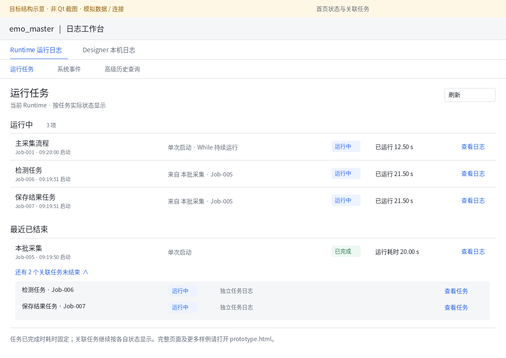
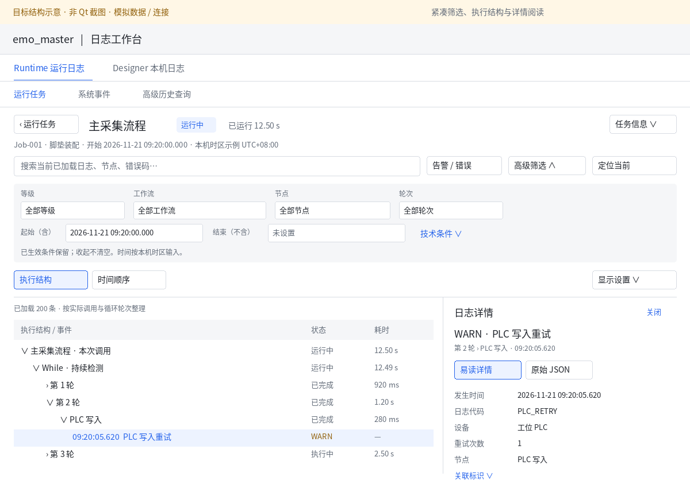
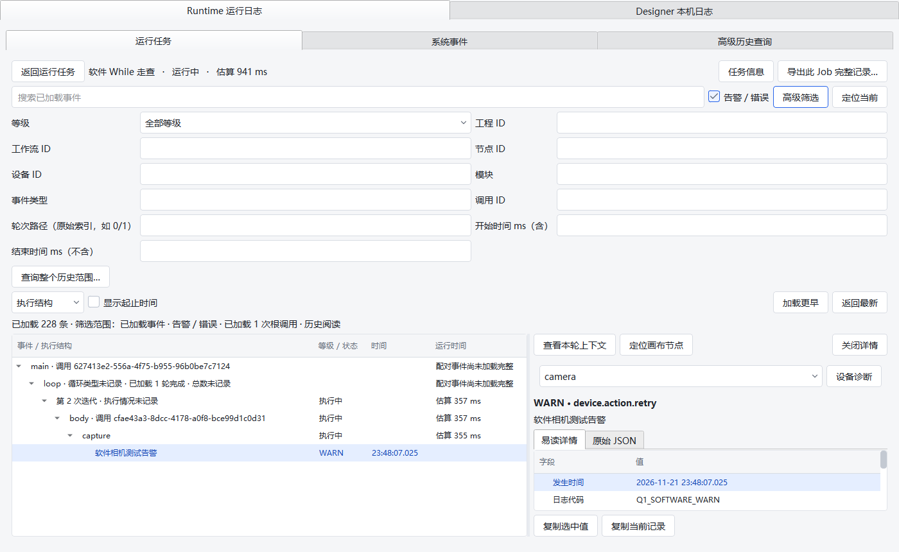
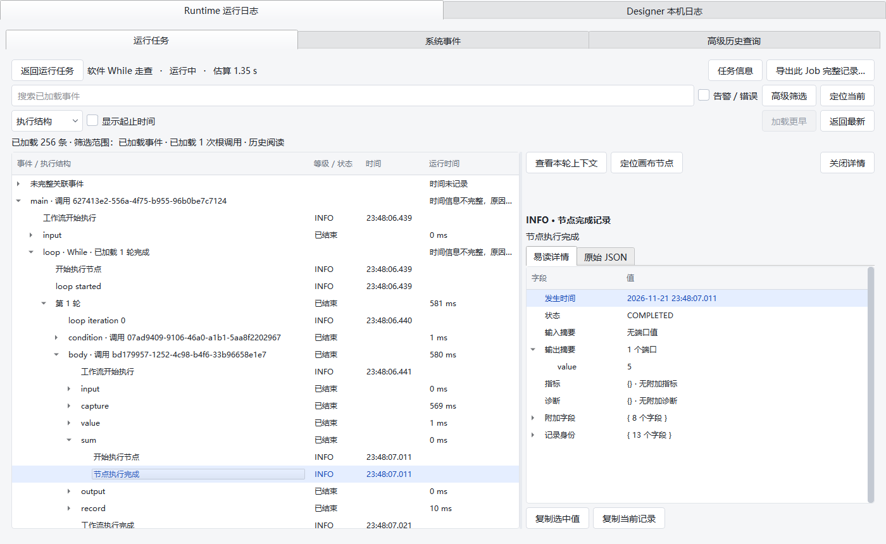

统一交互入口：运行任务、真实执行结构、循环与连续调用、日期和技术筛选、易读详情、设备诊断、Designer 与独立调试。
首页点“还有 2 个关联任务未结束”查看关联任务；任务详情点“高级筛选”，再展开或收起“技术条件”。日期输入使用 本机时区示例 UTC+08:00；正式产品必须遵守设计文档中的真实本机时区规则。
可离线双击打开。按钮、筛选、树分支、来源切换及详情抽屉均为本地交互。参阅 完整参考说明及 视觉使用规则；正式范围以同一变更的完整设计与规格为准，不需要读取另一个旧方案或原型。
关系说明：普通子工作流在同一个 Job 的执行树内；首页展开的“关联任务”是有明确来源关系的独立 Job。不能仅凭 active 状态断言某个子流程还在运行。
用于核对信息层级、分组和默认展开关系。以下图片由结构绘制，不是 Qt 截图，也不是新实现验收结果。


以下只说明仍适用的关系。外围导航、筛选默认状态和字段布局以最新原型与上面两张目标图为准，不能按旧图重新引入已经取消的产品工具条。
基线 fa4b72d751189c2689882a0a0d127fd280a35fde。这些图片说明旧实现已有哪些能力；不是本次新方案验收，不能据此判断当前完整方案已经验收通过。

